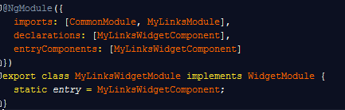
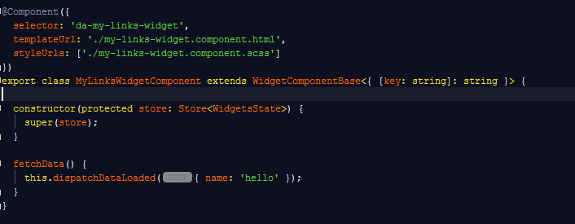
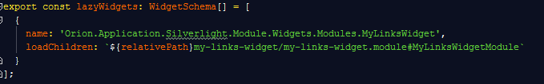
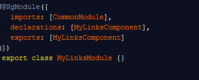
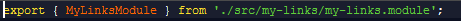

In order to add a widget to dashboards you will need to build a couple modules and components. Then you will register your widget.
You will place your controls in two different spots. Widgets go in the storms-dashboard application and your web-part goes in the libs/web-parts folder.
The reason behind putting your actual web-part somewhere else is so that can easily be reused because it will have no knowledge of the dashboards app. Your widget communicates with the functionality of dashboards and your web-part communicates to the widget.
ng g m widgets/<web-part-name>Widget --app storms-dashboardng g c widgets/<web-part-name>Widget --app storms-dashboardAfter you have generated these files you need to implement a couple interfaces. The module will need to implement the WidgetModule interface.
This interface requires the class to have a static property called 'entry'. The value is the component you previously created. The screenshot below shows the widget module for MyLinks. As you can see the MyLinksComponent is referenced as entry in the class and also as entryComponents in the decorator.

The component you just created will need to implement WidgetComponent. The interface requires a property with the name widget and type Widget. To simplify things a base class has been provided that you can extend. This is what the next screen shot is showing

Once you have implemented these interfaces you need to register your widget. this is so the app can load it on demand if it is used in a dashboard. The interface for this is of type WidgetSchema and is added to the lazyWidgets variable.
When registering your widget the name value is the ModuleType property that comes down from enterprise. The value is the path to your widget module. See screen shot for example.

ng g m <web-part-name> --app web-partsng g c <web-part-name> --app web-partsOnce you have created these files you will want to go back to your

The final step is to go to web-parts/index.ts and export your module.

Congratulations! You have a widget.